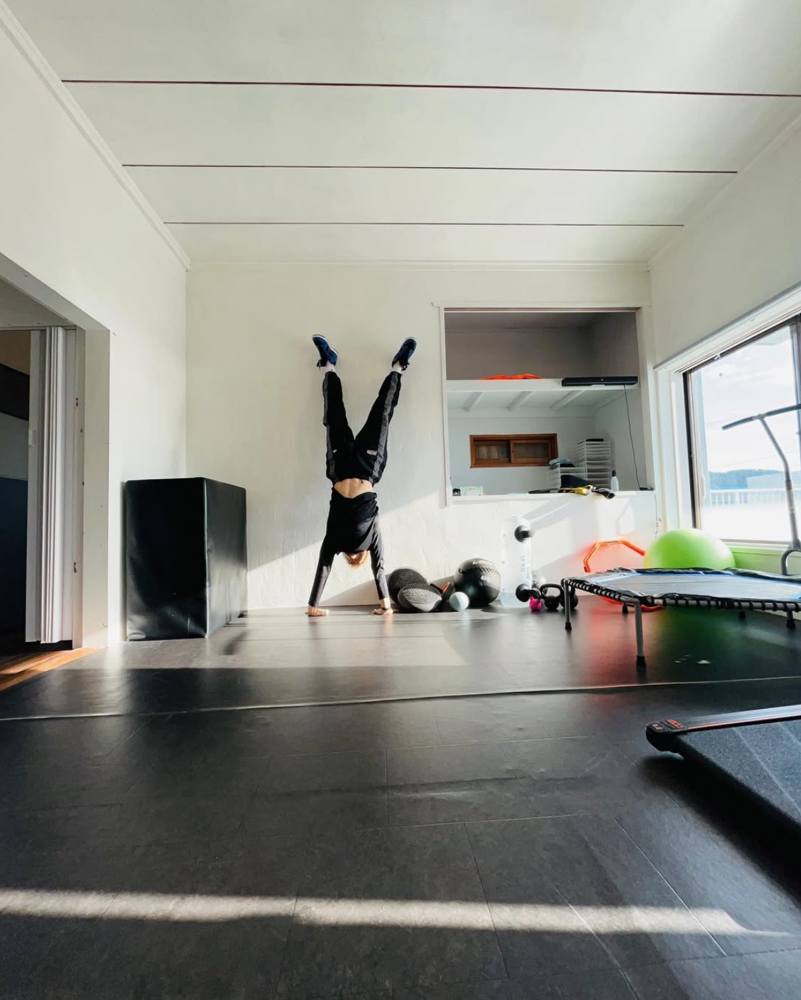
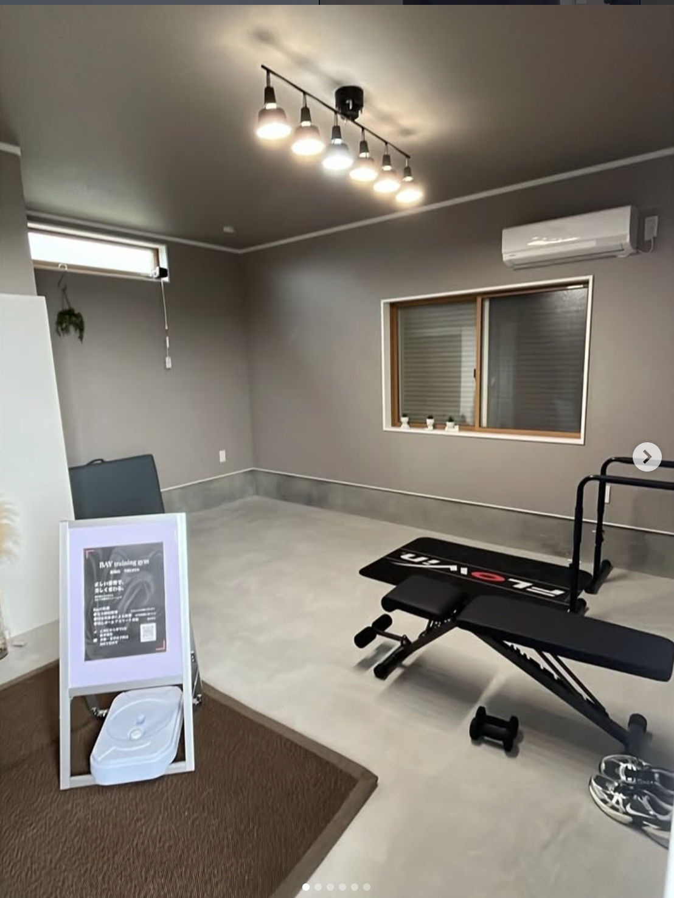

ASSESS
姿勢・動作を評価
骨格や関節、動作のクセをチェック。現在の身体の状態を知り、取り組むポイントを整理します。
MIYAZAKI / BODYWEIGHT TRAINING
姿勢を知る。動きを磨く。自重で鍛える。
あなたに合わせた、パーソナルトレーニング。
01 / ABOUT BAY
大切なのは、重さよりも、動きの質。
BAY training gymは、自分の体重を使って身体を鍛えるジムです。姿勢や動作を見つめ直すことから始め、一人ひとりに合った動き方を一緒に探していきます。
運動が久しぶりの方から、スポーツのための身体づくりまで。理学療法士考案のメソッドをもとに、今のあなたに合ったトレーニングを。
3つのステップを見る自分の身体を、使いこなす。
一人ひとりの動きに、向き合う。
変化を確かめ、自分のペースで。

02 / OUR METHOD
評価、指導、振り返り。
3つのステップで、動きの質を育てます。
ASSESS
骨格や関節、動作のクセをチェック。現在の身体の状態を知り、取り組むポイントを整理します。
TRAIN
一人ひとりに合わせた自重トレーニング。フォームを丁寧に確認しながら、無理のない強度で進めます。
TRACK
体組成や可動域、動作の変化を確認。目標と現在地を共有して、次のトレーニングにつなげます。
03 / PROGRAM & PRICE
スタジオでも、オンラインでも。
自分に合う始め方を相談できます。
FIRST PROGRAM
初回評価と6日間のプログラム。身体の感覚を見つめ直す、入門コース。
¥9,900/ 7日間
このコースを相談PERSONAL TRAINING
マンツーマンで姿勢評価から動作改善まで。フォームを丁寧に確認。
¥9,900/ 60分
このコースを相談ATHLETE CONDITIONING
競技の動きに合わせたコンディショニングと動作分析。
¥14,300/ 90分
このコースを相談ONLINE
自宅でも、BAYのトレーニングを。ライブセッションと動画で継続。
¥4,900/ 月
このコースを相談料金・提供内容・受付状況の詳細は、お申し込み前にお問い合わせください。
04 / PERSONAL SUPPORT
理学療法士考案のトレーニングをもとに、姿勢や動作を確認。目標だけでなく、これまでの運動経験や普段の生活にも目を向けます。
自分の身体について話せること。フォームをその場で確かめられること。その積み重ねを、BAYは大切にしています。
トレーニングを相談する
05 / STUDIO
日南・都城の2つのスタジオ。
最新の受付状況はInstagramでご案内します。
NICHINAN
アクセス・営業時間・空き状況は
店舗へお問い合わせください。
MIYAKONOJO
アクセス・営業時間・空き状況は
店舗へお問い合わせください。
06 / FIRST VISIT
まずは、ご希望を聞かせてください。
希望する店舗やコース、トレーニングの目的をDMでお知らせください。
担当者と体験内容、料金、日時を相談。持ち物もあわせて確認します。
現在の状態や目標を共有し、あなたに合うトレーニングを相談します。
07 / FAQ
自分の体重を負荷として使うトレーニングです。BAYでは姿勢やフォームを確認しながら、一人ひとりに合うメニューを相談していきます。
はい。運動経験や現在の身体の状態、目標をお知らせください。内容や強度について、体験前に担当者と相談できます。
コースが決まっていなくてもお問い合わせいただけます。目的、通いやすい店舗、希望する頻度をDMでお知らせください。
Instagramの公式アカウントへDMをお送りください。日時、料金、持ち物は担当者からの案内をご確認ください。
「BAYトレ オンライン」をご用意しています。参加方法やスケジュール、提供内容はお問い合わせください。
YOUR NEXT MOVE
体験のご相談・お問い合わせは、Instagramへ。